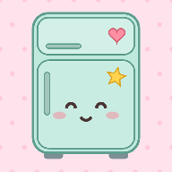

Dolu Dolu
Privacy PolicyLast updated: 25 November 2026 · Version 0.3
In short
Dolu Dolu does not collect, store or share any personal data. There are no accounts, logins, chat, sharing, ads, in-app purchases, analytics or tracking tools. The app does not even request internet access.
Data kept on the device
Earned stars and settings (Little/Big mode, read-aloud and game sounds on/off) are stored only on the player's own device, in the app's private storage. They are never sent to any server and are deleted when the app is uninstalled. This information does not identify anyone.
Read-aloud
In-game sentences are read aloud by the device's own text-to-speech feature. The game does not send these sentences anywhere. The microphone is not used.
Children
The game is for everyone, including children, and is designed to comply with the Google Play Families Policy. No name, age, email, location, photo or any other information is requested from children (or adults). The "Little / Big" choice at start only sets the difficulty and stays on the device.
Third parties
The game contains no third-party advertising, analytics or tracking services. It is made with the open-source Godot Engine, which does not collect data either.
Changes
If a feature is added in the future (for example optional, child-appropriate, non-personalised "watch an ad for a hint"), this page will be updated beforehand and its date changed.
Contact
Developer: A. Köseoğlu
Email: doludoluapp@gmail.com